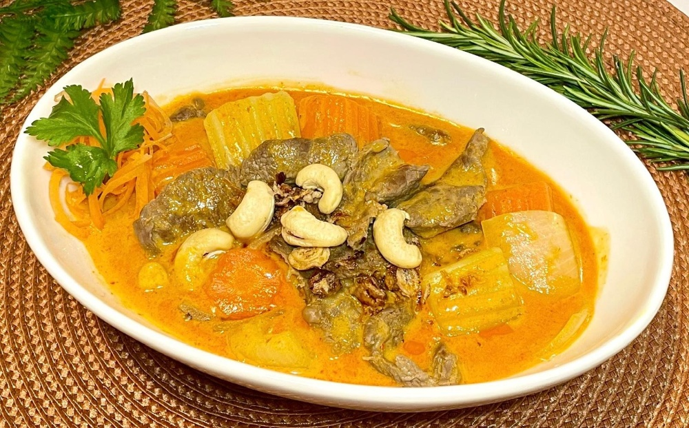
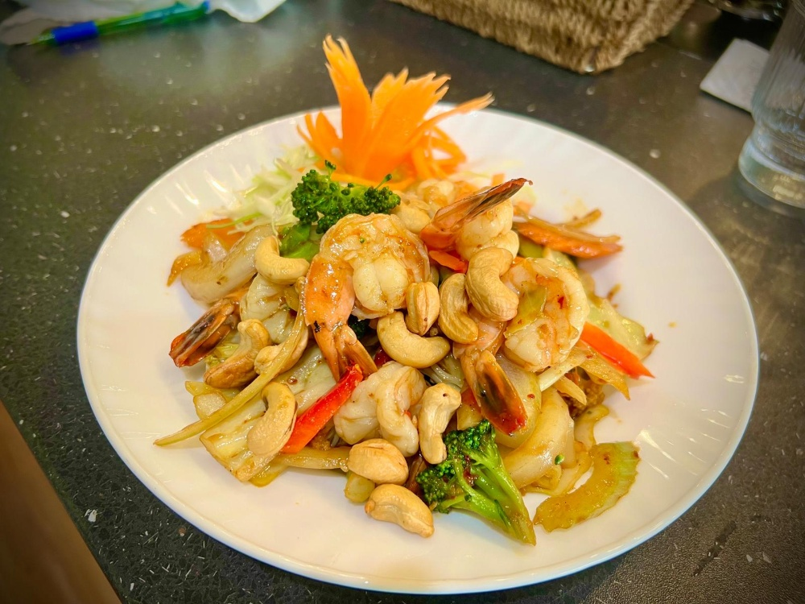

D32 · Traditional Pad Thai
Our iconic street-food classic — thin rice noodles stir-fried in our signature homemade tamarind sauce with free-range eggs, crushed peanuts, spring onions, and crisp fresh bean sprouts.
A must-visit culinary destination for locals and tourists alike! Discover our extensive authentic noodle menu, chef specials, and unique Thai desserts.
Order Pickup or Delivery Reserve Your TableChang Thai Restaurant is Hornby and Christchurch's beloved destination for authentic Thai cuisine. We cater warmly to both our loyal local community and tourists visiting the beautiful Canterbury region.
Conveniently located at 21 Shands Road, Hornby, we offer free on-site parking and a completely disability-friendly environment, including accessible bathrooms.
Enjoy your meal exactly how you like it! We are Fully Licensed and proudly offer BYO (for a fee). Whether you are craving street-food classics, house specials, or our signature unique desserts, our doors are open to welcome you.





"We went Chang Thai Restaurant with my friends and all are amazing. The food is so good and the service is 10 out of 10. Definitely worth to try. Thai Milk tea made me cool down in Hot NZ Summer. Seafood salad is yummmmm."
"First time here after reading amazing reviews. Didn't disappoint at all, delici authentic flavors, warm ambience and great service. We had Pad see ew and Northern Thai Curry noodles- Khao Soi, even Tried extra mild medium hot and wow amazing! Highly recommended!"
"Recommend by friend and this is the 3rd time back!!!! Super friendly staff and food is simply the best Thai in Christchurch! We have ordered pink noodles, which is the flat rice noodle and comes with heaps of sides, and good mild spicy... Must be very good, so sure I will back!"
Lunch is served from 11:30 AM to 2:30 PM. Dinner is served from 5:00 PM to 9:00 PM (During the NZ Winter season, dinner hours are 4:30 PM to 8:30 PM). We are closed on Mondays and all Public Holidays.
Yes! We are a fully licensed premises. We also welcome BYO for our dining guests (a standard corkage fee applies).
Absolutely. Our building is highly accessible and disability friendly, which includes a dedicated disability bathroom for your comfort.
Yes, we provide free on-site parking for all our customers right at the restaurant.
Yes! Being just a short drive from Christchurch Airport, we highly encourage tourists to come experience an authentic taste of Thailand while visiting New Zealand.
Yes! Chang Thai is a family-friendly Thai restaurant. We have high chairs available for young children and love welcoming families for a relaxed, authentic dining experience.
We offer 7 customizable spice levels — from Level 1 (No Chili) all the way to Level 7 (Extra Hot, authentic Thai style). You can also request to remove any ingredients such as peanuts, coriander, garlic, or onions to suit your preferences.
Absolutely! We have an extensive selection of vegetarian and vegan Thai dishes using fresh vegetables and tofu. Many of our dishes are also naturally gluten-free. Every dish can be fully customized — just let us know your dietary requirements when ordering.
Yes! You can place orders directly online at ordering.changthai.co.nz for both pickup and delivery. We also partner with DoorDash and Uber Eats for delivery across Hornby and surrounding Christchurch suburbs.
Our Traditional Pad Thai (D32) is our all-time best seller — thin rice noodles stir-fried in our signature homemade tamarind sauce with free-range eggs, crushed peanuts, and fresh bean sprouts.
📍 Address:
21 Shands Road, Hornby, Christchurch 8042
📞 Phone:
(03) 349 7069
✉️ Email:
changthaihb2024@gmail.com
🕐 Opening Hours:
Tue – Sun: 11:30 AM – 2:30 PM (Lunch)
Tue – Sun: 5:00 PM – 9:00 PM (Dinner)
Winter Dinner Hours: 4:30 PM – 8:30 PM
Closed Mondays & Public Holidays
💳 Payments: Cash · Credit Card · EFTPOS
🚗 Parking: Free on-site parking available
We are completely open to catering events for lunch. Please call the shop for further information, availability, and to discuss a special menu for your event.
Contact form temporarily offline. Please reach out to us via phone or email above!